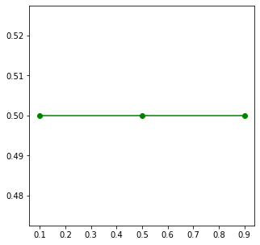
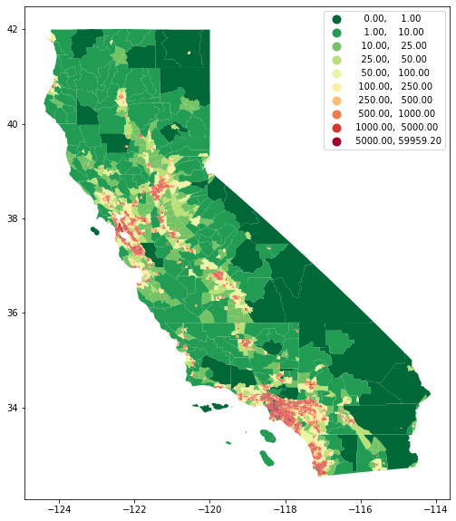
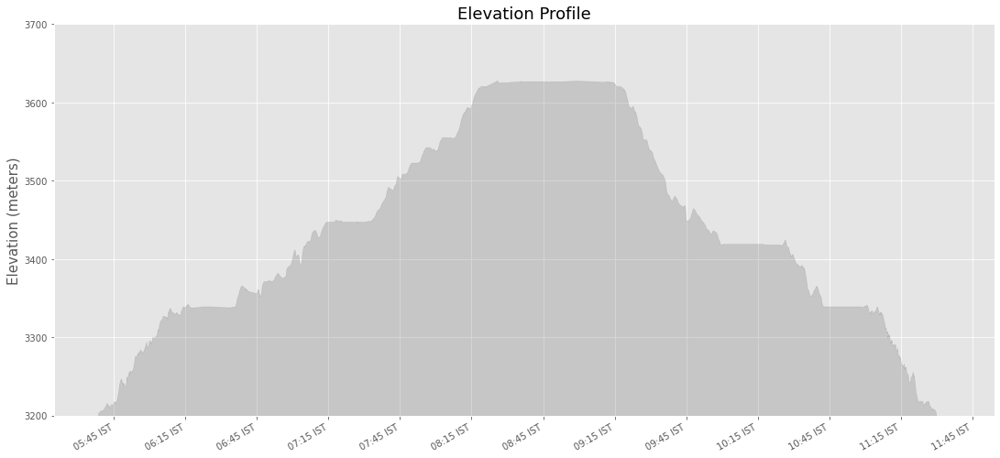

Mapping and Data Visualization with Python (Full Course Material)
A comprehensive guide for creating static and dynamic visualizations with spatial data.
Ujaval Gandhi
- Introduction
- Notebooks and Datasets
- Hello Colab
- Matplotlib Basics
- Creating Charts
- Creating Maps
- Using Basemaps
- XArray Basics
- Mapping Gridded Datasets
- Visualizing Rasters
- Interactive Maps with Folium
- Multi-layer Interactive Maps
- Leafmap Basics
- Streamlit Basics
- Building Apps and Dashboards with Streamlit
- Supplement
- Resources
- Data Credits
- License

Introduction
This is an intermediate-level course that teaches you how to use Python for creating charts, plots, animations, and maps.

Notebooks and Datasets
This course uses Google Colab for all exercises. You do not need to install any packages or download any datasets. The notebooks can be accessed by clicking on the  buttons at the beginning of each section. You may also access them directly from the GitHub repository.
buttons at the beginning of each section. You may also access them directly from the GitHub repository.
Hello Colab

Google Colab is a hosted Jupyter notebook environment that allows anyone to run Python code via a web-browser. It provides you free computation and data storage that can be utilized by your Python code.
You can click the +Code button to create a new cell and enter a block of code. To run the code, click the Run Code button next to the cell, or press Shirt+Enter key.
print('Hello World')Hello WorldPackage Management
Colab comes pre-installed with many Python packages. You can use a package by simply importing it.
import pandas as pdEach Colab notebook instance is run on a Ubuntu Linux machine in the cloud. If you want to install any packages, you can run a command by prefixing the command with a !. For example, you can install third-party packages via pip using the command !pip.
Tip: If you want to list all pre-install packages and their versions in your Colab environemnt, you can run
!pip list -v.
!pip install --quiet rioxarrayimport rioxarraySome packages may also require additional binaries or local configuration. This can be achieved using package management commands for Ubuntu Linux. For example, we can run apt command to install specific package required for geopandas to work correctly.
!apt install -qq libspatialindex-dev
!pip install --quiet fiona shapely pyproj rtree
!pip install --quiet geopandaslibspatialindex-dev is already the newest version (1.8.5-5).
The following package was automatically installed and is no longer required:
libnvidia-common-460
Use 'apt autoremove' to remove it.
0 upgraded, 0 newly installed, 0 to remove and 20 not upgraded.import geopandas as gpdData Management
Colab provides 100GB of disk space along with your notebook. This can be used to store your data, intermediate outputs and results.
The code below will create 2 folders named ‘data’ and ‘output’ in your local filesystem.
import os
data_folder = 'data'
output_folder = 'output'
if not os.path.exists(data_folder):
os.mkdir(data_folder)
if not os.path.exists(output_folder):
os.mkdir(output_folder)We can download some data from the internet and store it in the Colab environment. Below is a helper function that uses urllib to fetch any file from a URL.
def download(url):
filename = os.path.join(data_folder, os.path.basename(url))
if not os.path.exists(filename):
from urllib.request import urlretrieve
local, _ = urlretrieve(url, filename)
print('Downloaded ' + local)Let’s download the Populated Places dataset from Natural Earth.
download('https://naciscdn.org/naturalearth/10m/cultural/' +
'ne_10m_populated_places_simple.zip')Downloaded data/ne_10m_populated_places_simple.zipThe file is now in our local filesystem. We can construct the path to the data folder and read it using geopandas
file = 'ne_10m_populated_places_simple.zip'
filepath = os.path.join(data_folder, file)
places = gpd.read_file(filepath)Let’s do some data processing and write the results to a new file. The code below will filter all places which are also country capitals.
capitals = places[places['adm0cap'] == 1]
capitalsWe can write the results to the disk as a GeoPackage file.
output_file = 'capitals.gpkg'
output_path = os.path.join(output_folder, output_file)
capitals.to_file(driver='GPKG', filename=output_path)You can open the Files tab from the left-hand panel in Colab and browse to the output folder. Locate the capitals.gpkg file and click the ⋮ button and select Download to download the file locally.
Matplotlib Basics

This notebook introduces the Matplotlib library. This is one of the core Python packages for data visualization and is used by many spatial and non-spatial packages to create charts and maps.
Setup
Most of the Matplotlib functionality is available in the pyplot submodule, and by convention is imported as plt
import os
import matplotlib.pyplot as pltConcepts
It is important to understand the 2 matplotlib objects
- Figure: This is the main container of the plot. A figure can contain multiple plots inside it
- Axes: Axes refers to an individual plot or graph. A figure contains 1 or more axes.
We create a figure and a single subplot. Specifying 1 row and 1 column for the subplots() function create a figure and an axes within it. Even if we have a single plot in the figure, it is useful to use tthis logic of intialization so it is consistent across different scripts.
fig, ax = plt.subplots(1, 1)
fig.set_size_inches(5,5)
plt.show()
First, let’s learn how to plot a single point using matplotlib. Let’s say we want to display a point at the coordinate (0.5, 0.5).
point = (0.5, 0.5)We display the point using the plot() function. The plot() function expects at least 2 arguments, first one being one or more x coordinates and the second one being one or more y coordinates. Remember that once a plot is displayed using plt.show(), it displays the plot and empties the figure. So you’ll have to create it again.
Reference: matplotlib.pyplot.plot
fig, ax = plt.subplots(1, 1)
fig.set_size_inches(5,5)
ax.plot(point[0], point[1], color='green', marker='o')
plt.show()
Note: Understanding *args and **kwargs
Python functions accept 2 types of arguments. - Non Keyword Arguments: These are referred as *args. When the number of arguments that a function takes is not fixed, it is specified as *args. In the function plot() above, you can specify 1 argument, 2 arguments or even 6 arguments and the function will respond accordingly. - Keyword Arguments: These are referred as **kwargs. These are specified as key=value pairs and usually used to specify optional parameters. These should always be specified after the non-keyword arguments. The color='green' in the plot() function is a keyboard argument.
One problematic area for plotting geospatial data using matplotlib is that geospatial data is typically represented as a list of x and y coordinates. Let’s say we want to plot the following 3 points defined as a list of (x,y) tuples.
points = [(0.1, 0.5), (0.5, 0.5), (0.9, 0.5)]But to plot it, matplotlib require 2 separate lists or x and y coordinates. Here we can use the zip() function to create list of x and y coordinates.
x, y = zip(*points)
print(x)
print(y)(0.1, 0.5, 0.9)
(0.5, 0.5, 0.5)Now these can be plotted using the plot() method. We specify keyword arguments color and marker.
fig, ax = plt.subplots(1, 1)
fig.set_size_inches(5,5)
ax.plot(x, y, color='green', marker='o')
plt.show()
fig, ax = plt.subplots(1, 1)
fig.set_size_inches(5,5)
ax.plot(x, y, color='green', marker='o', linestyle='None')
plt.show()
You can save the figure using the savefig() method. Remember to save the figure before calling plt.show() otherwise the figure would be empty.
fig, ax = plt.subplots(1, 1)
fig.set_size_inches(5,5)
ax.plot(x, y, color='green', marker='o', linestyle='None')
output_folder = 'output'
output_path = os.path.join(output_folder, 'simple.png')
plt.savefig(output_path)
plt.show()Matplotlib provides many specialized functions for different types of plots. scatter() for Scatter Charts, bar() for Bar Charts and so on. You can use them directly, but in practice they are used via higher-level libraries like pandas. In the next section, we will see how to create such charts.
Exercise
Create a plot that displays the 2 given points with their x,y coordinates with different sumbology.
point1: Plot it with green color and a triangle marker.point2: Plot it with red color and a circle marker.
Reference: matplotlib.pyplot.plot
Hint: You can call
plot()multiple times to add new data to the same Axes.
import matplotlib.pyplot as plt
point1 = (4, 1)
point2 = (3, 4)Creating Charts

Overview
Pandas allows you to read structured datasets and visualize them using the plot() method. By default, Pandas uses matplotlib to create the plots.
In this notebook, we will take work with open dataset of crime in London.
Setup and Data Download
The following blocks of code will install the required packages and download the datasets to your Colab environment.
import pandas as pd
import os
import matplotlib.pyplot as pltdata_folder = 'data'
output_folder = 'output'
if not os.path.exists(data_folder):
os.mkdir(data_folder)
if not os.path.exists(output_folder):
os.mkdir(output_folder)def download(url):
filename = os.path.join(data_folder, os.path.basename(url))
if not os.path.exists(filename):
from urllib.request import urlretrieve
local, _ = urlretrieve(url, filename)
print('Downloaded ' + local)We have 12 different CSV files containing crime data for each month of 2020. We download each of them to the data folder.
files = [
'2020-01-metropolitan-street.csv',
'2020-02-metropolitan-street.csv',
'2020-03-metropolitan-street.csv',
'2020-04-metropolitan-street.csv',
'2020-05-metropolitan-street.csv',
'2020-06-metropolitan-street.csv',
'2020-07-metropolitan-street.csv',
'2020-08-metropolitan-street.csv',
'2020-09-metropolitan-street.csv',
'2020-10-metropolitan-street.csv',
'2020-11-metropolitan-street.csv',
'2020-12-metropolitan-street.csv'
]
data_url = 'https://github.com/spatialthoughts/python-dataviz-web/raw/main/data/crime/'
for f in files:
url = os.path.join(data_url + f)
download(url)Downloaded data/2020-01-metropolitan-street.csv
Downloaded data/2020-02-metropolitan-street.csv
Downloaded data/2020-03-metropolitan-street.csv
Downloaded data/2020-04-metropolitan-street.csv
Downloaded data/2020-05-metropolitan-street.csv
Downloaded data/2020-06-metropolitan-street.csv
Downloaded data/2020-07-metropolitan-street.csv
Downloaded data/2020-08-metropolitan-street.csv
Downloaded data/2020-09-metropolitan-street.csv
Downloaded data/2020-10-metropolitan-street.csv
Downloaded data/2020-11-metropolitan-street.csv
Downloaded data/2020-12-metropolitan-street.csvData Pre-Processing
It will be helpful to merge all 12 CSV files into a single dataframe. We can use pd.concat() to merge a list of dataframes.
dataframe_list = []
for f in files:
filepath = os.path.join(data_folder, f)
df = pd.read_csv(filepath)
dataframe_list.append(df)
merged_df = pd.concat(dataframe_list)The resulting dataframe consists of over 1 million records of various crimes recorded in London in the year 2020.
merged_dfCreate a Pie-Chart
Let’s create a pie-chart showing the distribution of different types of crime. Pandas groupby() function allows us to calculate group statistics.
type_counts = merged_df.groupby('Crime type').size()
type_countsCrime type
Anti-social behaviour 415105
Bicycle theft 23517
Burglary 61044
Criminal damage and arson 50923
Drugs 51629
Other crime 10066
Other theft 81924
Possession of weapons 5763
Public order 53458
Robbery 27269
Shoplifting 34588
Theft from the person 31084
Vehicle crime 108344
Violence and sexual offences 227208
dtype: int64We now uses the plot() method to create the chart. This method is a wrapper around matplotlib and can accept supported arguments from it.
Reference: pandas.DataFrame.plot
fig, ax = plt.subplots(1, 1)
fig.set_size_inches(15,10)
type_counts.plot(kind='pie', ax=ax)
plt.show()
Let’s customize the chart. First we use set_title() method to add a title to the chart and set_ylabel() to remove the empty y-axis label. Lastly, we use the plt.tight_layout() to remove the extra whitespace around the plot.
fig, ax = plt.subplots(1, 1)
fig.set_size_inches(15,10)
type_counts.plot(kind='pie', ax=ax)
ax.set_title('Crime Types', fontsize = 18)
ax.set_ylabel('')
plt.tight_layout()
plt.show()
Matplotlib plots offer unlimited possibilities to customize your charts. Let’s see some of the options available to customize the pie-chart.
wedgeprops: Customize the look of each ‘wedge’ of the pie.textprops: Set the text properties of labels.autopctandpctdistance: Format and distance of the percentage label of each slice.
Reference: matplotlib.pyplot.pie
wedgeprops={'linewidth': 1, 'edgecolor': 'white'}
textprops= {'fontsize': 10, 'fontstyle': 'italic'}
autopct= '%.1f%%'
pctdistance = 0.8
fig, ax = plt.subplots(1, 1)
fig.set_size_inches(15,10)
type_counts.plot(kind='pie', ax=ax,
wedgeprops=wedgeprops,
textprops=textprops,
autopct=autopct,
pctdistance=pctdistance )
ax.set_title('Crime Types', fontsize = 18)
ax.set_ylabel('')
plt.tight_layout()
plt.show()
Create a Bar Chart
We can also chart the trend of crime over the year. For this, let’s group the data by month.
monthly_counts = merged_df.groupby('Month').size()
monthly_countsMonth
2020-01 90979
2020-02 86984
2020-03 87409
2020-04 109951
2020-05 114008
2020-06 100198
2020-07 103657
2020-08 104782
2020-09 99633
2020-10 99471
2020-11 96914
2020-12 87936
dtype: int64fig, ax = plt.subplots(1, 1)
fig.set_size_inches(15,7)
monthly_counts.plot(kind='bar', ax=ax)
plt.show()
As we learnt earlier, we can add multiple plots on the same Axes. We can add a line chart along with the bar chart to show the trendline as well. Lastly we add the titles and axis labels to finish the chart.
fig, ax = plt.subplots(1, 1)
fig.set_size_inches(15,7)
monthly_counts.plot(kind='bar', ax=ax)
monthly_counts.plot(kind='line', ax=ax, color='red', marker='o')
ax.set_title('Total Crime by Month')
ax.set_ylabel('Total Incidents')
plt.show()
Exercise
Plot the trend of Bicycle thefts as a line chart. The cell below filters the merged_df dataframe to select incidents of ‘Bicycle theft’. Group the results by months and plot the results.
bicycle_thefts = merged_df[merged_df['Crime type'] == 'Bicycle theft']Creating Maps

Overview
Similar to Pandas, GeoPandas has a plot() method that can plot geospatial data using Matplotlib.
We will work with census data to create a choropleth map of population density. We will start with a shapefile of census tracts, and join it with tabular data to get a GeoDataframe with census tract geometry and correponding populations.
Setup and Data Download
The following blocks of code will install the required packages and download the datasets to your Colab environment.
%%capture
if 'google.colab' in str(get_ipython()):
!apt install libspatialindex-dev
!pip install fiona shapely pyproj rtree mapclassify
!pip install geopandasimport geopandas as gpd
import matplotlib.pyplot as plt
import os
import pandas as pddata_folder = 'data'
output_folder = 'output'
if not os.path.exists(data_folder):
os.mkdir(data_folder)
if not os.path.exists(output_folder):
os.mkdir(output_folder)def download(url):
filename = os.path.join(data_folder, os.path.basename(url))
if not os.path.exists(filename):
from urllib.request import urlretrieve
local, _ = urlretrieve(url, filename)
print('Downloaded ' + local)We will download the the census tracts shapefile and a CSV file containing a variety of population statistics for each tract.
shapefile_name = 'tl_2019_06_tract'
shapefile_exts = ['.shp', '.shx', '.dbf', '.prj']
data_url = 'https://github.com/spatialthoughts/python-dataviz-web/raw/main/data/census/'
for ext in shapefile_exts:
url = data_url + shapefile_name + ext
download(url)
csv_name = 'ACSST5Y2019.S0101_data.csv'
download(data_url + csv_name)Downloaded data/tl_2019_06_tract.shp
Downloaded data/tl_2019_06_tract.shx
Downloaded data/tl_2019_06_tract.dbf
Downloaded data/tl_2019_06_tract.prj
Downloaded data/ACSST5Y2019.S0101_data.csvData Pre-Processing
Let’s read the census tracts shapefile and the CSV file containing population counts.
shapefile_path = os.path.join(data_folder, shapefile_name + '.shp')
tracts = gpd.read_file(shapefile_path)
tractsWe now read the file containing a variety of population statistics for each tract. We read this file as a Pandas DataFrame. The CSV file contains an extra row before the header, so we specify skiprows=[1] to skip reading it.
csv_path = os.path.join(data_folder, csv_name)
table = pd.read_csv(csv_path, skiprows=[1])
tableTo join this DataFrame with the GeoDataFrame, we need a column with unique identifiers. We use the GEOID column and process the id so they match exactly in both datasets.
filtered = table[['GEO_ID','NAME', 'S0101_C01_001E']]
filtered = filtered.rename(columns = {'S0101_C01_001E': 'Population', 'GEO_ID': 'GEOID'})
filtered['GEOID'] = filtered.GEOID.str[-11:]Finally, we do a table join using the merge method.
gdf = tracts.merge(filtered, on='GEOID')
gdfFor creating a choropleth map, we must normalize the population counts. US Census Bureau recommends calculating the population density by dividing the total population by the land area. The original shapefile contains a column ALAND with the land area in square kilometers. Using it, we compute a new column density containing the persons per square kilometer.
gdf['density'] = 1e6*gdf['Population']/gdf['ALAND']
gdfCreate a Choropleth Map
The plot() method will render the data to a plot.
Reference: geopandas.GeoDataFrame.plot
fig, ax = plt.subplots(1, 1)
fig.set_size_inches(10,10)
gdf.plot(ax=ax)
plt.show()
You can supply additional style options to change the appearance of the map. facecolor and edgecolor parameters are used to determine the fill and outline colors respectively. The stroke width can be adjusted using the linewidth parameter.
fig, ax = plt.subplots(1, 1)
fig.set_size_inches(10,10)
gdf.plot(ax=ax, facecolor='#f0f0f0', edgecolor='#de2d26', linewidth=0.5)
plt.show()
We have the population density for each tract in the density column. We can assign a color to each polygon based on the value in this column - resulting in a choropleth map. Additionally, we need to specify a color ramp using cmap and classification scheme using scheme. The classification schedule will determine how the continuous data will be classified into discrete bins.
Tip: You can add
_rto any color ramp name to get a reversed version of that ramp.
References: - Matplotlib Colormaps - Mapclassify Classification Schemes
fig, ax = plt.subplots(1, 1)
fig.set_size_inches(10,10)
gdf.plot(ax=ax, column='density', cmap='RdYlGn_r', scheme='quantiles')
plt.show()
Instead of the class breaks being determined by the classification scheme, we can also manually specify the ranges. This is preferable so we can have a human-interpretable legend. The legend=True parameter adds a legend to our plot.
fig, ax = plt.subplots(1, 1)
fig.set_size_inches(10,10)
gdf.plot(ax=ax, column='density', cmap='RdYlGn_r', scheme='User_Defined',
classification_kwds=dict(bins=[1,10,25,50,100, 250, 500, 1000, 5000]),
legend=True)
plt.show()
We give final touches to our map and save the result as a PNG file. Remember to call plt.savefig() before showing the plot as the plot gets emptied after being shown.
output_path = os.path.join(output_folder, 'california_pop.png')
fig, ax = plt.subplots(1, 1)
fig.set_size_inches(10,10)
gdf.plot(ax=ax, column='density', cmap='RdYlGn_r', scheme='User_Defined',
classification_kwds=dict(bins=[1,10,25,50,100, 250, 500, 1000, 5000]),
legend=True)
ax.set_axis_off()
ax.set_title('California Population Density (2019)', size = 18)
plt.savefig(output_path, dpi=300)
plt.show()
Exercise
Plot the census tracts geodataframe tracts with just outlines and no fill color.
Hint: Set the
facecoloroption to'none'for no fills. Check the style_kwds parameter of theplot()method for more details.
fig, ax = plt.subplots(1, 1)
fig.set_size_inches(10,10)
tracts.plot(ax=ax)
plt.show()Using Basemaps

Overview
Creating geospatial visualizations oftern require overlaying your data on a basemap. Contextily is a package that allows you to fetch various basemaps from the internet and ad them to your plot as static images.
We will learn how to take a shapefile showing the path of the 2017 Solar Eclipse and create a map with a topographic basemap.
Setup and Data Download
The following blocks of code will install the required packages and download the datasets to your Colab environment.
%%capture
if 'google.colab' in str(get_ipython()):
!apt install libspatialindex-dev
!pip install fiona shapely pyproj rtree
!pip install geopandas
!pip install contextilyimport contextily as cx
import geopandas as gpd
import os
import matplotlib.pyplot as pltdata_folder = 'data'
output_folder = 'output'
if not os.path.exists(data_folder):
os.mkdir(data_folder)
if not os.path.exists(output_folder):
os.mkdir(output_folder)def download(url):
filename = os.path.join(data_folder, os.path.basename(url))
if not os.path.exists(filename):
from urllib.request import urlretrieve
local, _ = urlretrieve(url, filename)
print('Downloaded ' + local)
path_shapefile = 'upath17'
umbra_shapefile = 'umbra17'
shapefile_exts = ['.shp', '.shx', '.dbf', '.prj']
data_url = 'https://github.com/spatialthoughts/python-dataviz-web/raw/main/data/eclipse/'
for shapefile in [path_shapefile, umbra_shapefile]:
for ext in shapefile_exts:
url = data_url + shapefile + ext
download(url)Downloaded data/upath17.shp
Downloaded data/upath17.shx
Downloaded data/upath17.dbf
Downloaded data/upath17.prj
Downloaded data/umbra17.shp
Downloaded data/umbra17.shx
Downloaded data/umbra17.dbf
Downloaded data/umbra17.prjData Pre-Processing
path_shapefile_path = os.path.join(data_folder, path_shapefile + '.shp')
path_gdf = gpd.read_file(path_shapefile_path)
path_gdfumbra_shapefile_path = os.path.join(data_folder, umbra_shapefile + '.shp')
umbra_gdf = gpd.read_file(umbra_shapefile_path)
umbra_gdf[:5]Create a Multi-Layer Map
We can show a GeoDataFrame using the plot() method.
fig, ax = plt.subplots(1, 1)
fig.set_size_inches(15,7)
path_gdf.plot(ax=ax, facecolor='#cccccc', edgecolor='#969696', alpha=0.5)
plt.show()
To add another layer to our plot, we can simply render another GeoDataFrame on the same Axes.
fig, ax = plt.subplots(1, 1)
fig.set_size_inches(15,7)
path_gdf.plot(ax=ax, facecolor='#cccccc', edgecolor='#969696', alpha=0.5)
umbra_gdf.plot(ax=ax, facecolor='#636363', edgecolor='none')
plt.show()
Add A BaseMap
The visualization is not useful as it is missing context. We want to overlay this on a basemap to understand where the eclipse was visible from. We can choose from a variety of basemap tiles. There are over 200 basemap styles included in the library. Let’s see them using the providers property.
providers = cx.providers
providersFor overlaying the eclipse path, let’s use the OpenTopoMap basemap. We need to specify a CRS for the map. For now, let’s use the CRS of the original shapefile.
fig, ax = plt.subplots(1, 1)
fig.set_size_inches(15,7)
path_gdf.plot(ax=ax, facecolor='#cccccc', edgecolor='#969696', alpha=0.5)
umbra_gdf.plot(ax=ax, facecolor='#636363', edgecolor='none')
cx.add_basemap(ax, crs=path_gdf.crs, source=cx.providers.OpenTopoMap)
plt.show()
The web tiles for the basemap are in the Web Mercator CRS (EPSG:3857). When you request them in a different CRS, they are warped to the requested CRS. This may cause the labels to not be legible in some cases. Instead, we can request the tiles in their original CRS and reproject our data layer to its CRS.
path_reprojected = path_gdf.to_crs('EPSG:3857')
umbra_reprojected = umbra_gdf.to_crs('EPSG:3857')
fig, ax = plt.subplots(1, 1)
fig.set_size_inches(15,7)
path_reprojected.plot(ax=ax, facecolor='#cccccc', edgecolor='#969696', alpha=0.5)
umbra_reprojected.plot(ax=ax, facecolor='#636363', edgecolor='none')
cx.add_basemap(ax, crs=path_reprojected.crs, source=cx.providers.OpenTopoMap)
ax.set_axis_off()
ax.set_title('2017 Total Solar Eclipse Path', size = 18)
plt.show()
Exercise
Instead of the OpenTopoMap, create a visualization using the Toner basemap from Stamen. Save the resulting visualization as a PNG file eclipse_path.png.
XArray Basics

Overview
Many climate and meteorological datasets come as gridded rasters in data formats such as NetCDF and GRIB. We will use XArray to read, process and visualize the gridded raster dataset.
Xarray is an evolution of rasterio and is inspired by libraries like pandas to work with raster datasets. It is particularly suited for working with multi-dimensional time-series raster datasets. It also integrates tightly with dask that allows one to scale raster data processing using parallel computing. XArray provides Plotting Functions based on Matplotlib.
In this section, we will take the Gridded Monthly Temperature Anomaly Data from 1880-present from GISTEMP and visualize the temperature anomaly for the year 2021.
Setup and Data Download
The following blocks of code will install the required packages and download the datasets to your Colab environment.
import os
import matplotlib.pyplot as plt
import xarray as xrdata_folder = 'data'
output_folder = 'output'
if not os.path.exists(data_folder):
os.mkdir(data_folder)
if not os.path.exists(output_folder):
os.mkdir(output_folder)def download(url):
filename = os.path.join(data_folder, os.path.basename(url))
if not os.path.exists(filename):
from urllib.request import urlretrieve
local, _ = urlretrieve(url, filename)
print('Downloaded ' + local)
filename = 'gistemp1200_GHCNv4_ERSSTv5.nc'
data_url = 'https://github.com/spatialthoughts/python-dataviz-web/raw/main/data/gistemp/'
download(data_url + filename)Downloaded data/gistemp1200_GHCNv4_ERSSTv5.ncXArray Terminology
By convention, XArray is imported as xr. We use Xarray’s open_dataset() method to read the gridded raster. The result is a xarray.Dataset object.
file_path = os.path.join(data_folder, filename)
ds = xr.open_dataset(file_path)The NetCDF file contains a grid of values for each month from 1880-2021 at a spatial resolution of 2 degrees. Let’s understand what is contained in a Dataset.
- Variables: This is similar to a band in a raster dataset. We have 2 variables in this dataset:
tempanomanyandtime_bnds. Each variable contains an array of values. - Dimensions: This is similar to number of array axes. We have a 4-dimensional dataset. A 2D grid of pixels (
latandlon) at multiple time intervalstimewith multiple variablesnv. - Coordinates: These are the labels for values in each dimension. We have labels for
lat,lonandtime. - Attributes: This is the metadata associated with the dataset.
ds<xarray.Dataset>
Dimensions: (lat: 90, lon: 180, time: 1704, nv: 2)
Coordinates:
* lat (lat) float32 -89.0 -87.0 -85.0 -83.0 ... 83.0 85.0 87.0 89.0
* lon (lon) float32 -179.0 -177.0 -175.0 -173.0 ... 175.0 177.0 179.0
* time (time) datetime64[ns] 1880-01-15 1880-02-15 ... 2021-12-15
Dimensions without coordinates: nv
Data variables:
time_bnds (time, nv) datetime64[ns] 1880-01-01 1880-02-01 ... 2022-01-01
tempanomaly (time, lat, lon) float32 nan nan nan nan ... 3.65 3.65 3.65
Attributes:
title: GISTEMP Surface Temperature Analysis
institution: NASA Goddard Institute for Space Studies
source: http://data.giss.nasa.gov/gistemp/
Conventions: CF-1.6
history: Created 2022-01-11 09:09:58 by SBBX_to_nc 2.0 - ILAND=1200,...
A Dataset consists of one or more xarray.DataArray object. This is the main object that consists of a single variable with dimension names, coordinates and attributes. You can access each variable using dataset.variable_name syntax.
Let’s see the time_bnds variable. This contains a 2d array which has both a starting and ending time for each one averaging period.
ds.time_bnds<xarray.DataArray 'time_bnds' (time: 1704, nv: 2)>
array([['1880-01-01T00:00:00.000000000', '1880-02-01T00:00:00.000000000'],
['1880-02-01T00:00:00.000000000', '1880-03-01T00:00:00.000000000'],
['1880-03-01T00:00:00.000000000', '1880-04-01T00:00:00.000000000'],
...,
['2021-10-01T00:00:00.000000000', '2021-11-01T00:00:00.000000000'],
['2021-11-01T00:00:00.000000000', '2021-12-01T00:00:00.000000000'],
['2021-12-01T00:00:00.000000000', '2022-01-01T00:00:00.000000000']],
dtype='datetime64[ns]')
Coordinates:
* time (time) datetime64[ns] 1880-01-15 1880-02-15 ... 2021-12-15
Dimensions without coordinates: nv
The main variable of interest is = tempanomaly - containing the grid of temperature anomaly values at different times. Let’s select that variable and store it as da.
da = ds.tempanomaly
da<xarray.DataArray 'tempanomaly' (time: 1704, lat: 90, lon: 180)>
[27604800 values with dtype=float32]
Coordinates:
* lat (lat) float32 -89.0 -87.0 -85.0 -83.0 -81.0 ... 83.0 85.0 87.0 89.0
* lon (lon) float32 -179.0 -177.0 -175.0 -173.0 ... 175.0 177.0 179.0
* time (time) datetime64[ns] 1880-01-15 1880-02-15 ... 2021-12-15
Attributes:
long_name: Surface temperature anomaly
units: K
cell_methods: time: mean
Selecting Data
XArray provides a very powerful way to select subsets of data, using similar framework as Pandas. Similar to Panda’s loc and iloc methods, XArray provides sel and isel methods. Since DataArray dimensions have names, these methods allow you to specify which dimension to query.
Let’s select the temperature anomany values for the last time step. Since we know the index (-1) of the datam we can use isel method.
da.isel(time=-1)<xarray.DataArray 'tempanomaly' (lat: 90, lon: 180)>
array([[-0.02, -0.02, -0.02, ..., -0.02, -0.02, -0.02],
[-0.02, -0.02, -0.02, ..., -0.02, -0.02, -0.02],
[-0.02, -0.02, -0.02, ..., -0.02, -0.02, -0.02],
...,
[ 3.65, 3.65, 3.65, ..., 3.65, 3.65, 3.65],
[ 3.65, 3.65, 3.65, ..., 3.65, 3.65, 3.65],
[ 3.65, 3.65, 3.65, ..., 3.65, 3.65, 3.65]], dtype=float32)
Coordinates:
* lat (lat) float32 -89.0 -87.0 -85.0 -83.0 -81.0 ... 83.0 85.0 87.0 89.0
* lon (lon) float32 -179.0 -177.0 -175.0 -173.0 ... 175.0 177.0 179.0
time datetime64[ns] 2021-12-15
Attributes:
long_name: Surface temperature anomaly
units: K
cell_methods: time: mean
We can also specify a value to query using the sel() method.
da.sel(time='2021-12-15')We can specify multiple dimensions to query for a subset. Let’s extract the temperature anomaly at lat=49, lon=-123 and time='2021-06-15'. This region experienced abnormally high temperatures in June 2021.
da.sel(lat=49, lon=-123, time='2021-06-15')<xarray.DataArray 'tempanomaly' ()>
array(3.86, dtype=float32)
Coordinates:
lat float32 49.0
lon float32 -123.0
time datetime64[ns] 2021-06-15
Attributes:
long_name: Surface temperature anomaly
units: K
cell_methods: time: mean
The sel() method also support nearest neighbor lookups. This is useful when you do not know the exact label of the dimension, but want to find the closest one.
Tip: You can use
interp()instead ofsel()to interpolate the value instead of closest lookup.
da.sel(lat=28.6, lon=77.2, time='2021-05-01', method='nearest')<xarray.DataArray 'tempanomaly' ()>
array(-0.76, dtype=float32)
Coordinates:
lat float32 29.0
lon float32 77.0
time datetime64[ns] 2021-05-15
Attributes:
long_name: Surface temperature anomaly
units: K
cell_methods: time: mean
The sel() method also allows specifying range of values using Python’s built-in slice() function. The code below will select all observationss in the year 2021.
da.sel(time=slice('2021-01-01', '2021-12-31'))Aggregating Data
A very-powerful feature of XArray is the ability to easily aggregate data across dimensions - making it ideal for many remote sensing analysis. Let’s calculate the average temperature anomany for the year 2021.
We first select the subset for year 2021 and apply the .mean() aggregation across the time dimension.
subset2021 = da.sel(time=slice('2021-01-01', '2021-12-31'))
subset2021.mean(dim='time')XArray has many features easily work with time-series data such as this. We can use temporal components to aggregate the data across time. Here we take our monthly time-series of anomalies and aggregate it to a yearly time-series using the groupby() method.
Reference: Resampling and grouped operations
yearly = da.groupby('time.year').mean(dim='time')
yearlyMapping Gridded Datasets

Overview
In this section, we will take the Gridded Monthly Temperature Anomaly Data from 1880-present from GISTEMP and visualize the temperature anomaly for the year 2021.
Setup and Data Download
The following blocks of code will install the required packages and download the datasets to your Colab environment.
%%capture
!apt-get -qq remove python-shapely python3-shapely
!pip install --no-binary shapely shapely --force
!pip install --no-binary cartopy cartopy==0.19.0.post1import cartopy
import cartopy.crs as ccrs
import os
import matplotlib.pyplot as plt
import xarray as xrdata_folder = 'data'
output_folder = 'output'
if not os.path.exists(data_folder):
os.mkdir(data_folder)
if not os.path.exists(output_folder):
os.mkdir(output_folder)def download(url):
filename = os.path.join(data_folder, os.path.basename(url))
if not os.path.exists(filename):
from urllib.request import urlretrieve
local, _ = urlretrieve(url, filename)
print('Downloaded ' + local)
filename = 'gistemp1200_GHCNv4_ERSSTv5.nc'
data_url = 'https://github.com/spatialthoughts/python-dataviz-web/raw/main/data/gistemp/'
download(data_url + filename)Downloaded data/gistemp1200_GHCNv4_ERSSTv5.ncData Pre-Processing
file_path = os.path.join(data_folder, filename)
ds = xr.open_dataset(file_path)da = ds.tempanomalyyearly = da.groupby('time.year').mean(dim='time')Plotting using Matplotlib
XArray provides a plot() method based on Matplotlib. When you call plot() on a 2D DataArray, it uses the xarray.plot.pcolormesh() function that creates a Pseudocolor plot.
Reference: xarray.plot.pcolormesh
anomaly2021 = yearly.sel(year=2021)
anomaly2021<xarray.DataArray 'tempanomaly' (lat: 90, lon: 180)>
array([[-1.0675001, -1.0675001, -1.0675001, ..., -1.0675001, -1.0675001,
-1.0675001],
[-1.0675001, -1.0675001, -1.0675001, ..., -1.0675001, -1.0675001,
-1.0675001],
[-1.0675001, -1.0675001, -1.0675001, ..., -1.0675001, -1.0675001,
-1.0675001],
...,
[ 3.7291667, 3.7291667, 3.7291667, ..., 3.7291667, 3.7291667,
3.7291667],
[ 3.7291667, 3.7291667, 3.7291667, ..., 3.7291667, 3.7291667,
3.7291667],
[ 3.7291667, 3.7291667, 3.7291667, ..., 3.7291667, 3.7291667,
3.7291667]], dtype=float32)
Coordinates:
* lat (lat) float32 -89.0 -87.0 -85.0 -83.0 -81.0 ... 83.0 85.0 87.0 89.0
* lon (lon) float32 -179.0 -177.0 -175.0 -173.0 ... 175.0 177.0 179.0
year int64 2021
fig, ax = plt.subplots(1, 1)
fig.set_size_inches(15, 7)
anomaly2021.plot(ax=ax)
plt.show()
We can customize the plot using Matplotlib’s options.
fig, ax = plt.subplots(1, 1)
fig.set_size_inches(15, 7)
anomaly2021.plot(ax=ax,
vmin=-3, vmax=3, add_labels=False, cmap='coolwarm')
ax.set_title('Temprature Anomaly in 2021 (°C)', fontsize = 14)
plt.show()
Plotting using CartoPy
To create more informative map visualization, we need to reproject this grid to another projection. CartoPy supports a wide range of projections and can plot them using matplotlib. CartoPy creates a GeoAxes object and replaces the default Axes with it. This allows you to plot the data on a specified projection.
Reference: CartoPy List of Projections
ax = plt.axes(projection=ccrs.Orthographic(0, 30))
ax.coastlines()
anomaly2021.plot(ax=ax,
vmin=-3, vmax=3, cmap='coolwarm',
transform=ccrs.PlateCarree())
fig = plt.gcf()
fig.set_size_inches(5,5)
plt.tight_layout()
plt.show()
We can further customize the map by adjusting the colorbar.
Reference: matplotlib.pyplot.colorbar
cbar_kwargs = {
'orientation':'horizontal',
'fraction': 0.025,
'pad': 0.05,
'extend':'neither'
}
ax = plt.axes(projection=ccrs.Orthographic(0, 30))
ax.coastlines()
anomaly2021.plot(
ax=ax,
vmin=-3, vmax=3, cmap='coolwarm',
transform=ccrs.PlateCarree(),
add_labels=False,
cbar_kwargs=cbar_kwargs)
fig = plt.gcf()
fig.set_size_inches(10,10)
plt.title('Temprature Anomaly in 2021 (°C)', fontsize = 14)
output_folder = 'output'
output_path = os.path.join(output_folder, 'anomaly.jpg')
plt.savefig(output_path, dpi=300)
plt.show()
Exercise
Display the map in the Robinson projection.
Visualizing Rasters

Overview
In the previous notebook, we learnt how to use Xarray to work with gridded datasets. XArray is also well suited to work with georeferenced rasters - such as satellite imagery, population grids, or elevation data.rioxarray is an extension of xarray that makes it easy to work with geospatial rasters. You can install the rioxarray package from the conda-forge channel.
In this section, we will take 4 individual SRTM tiles around the Mt. Everest region and merge them to a single GeoTiff using RasterIO. We will also use matplotlib to visualize the result with some annonations.
Setup and Data Download
The following blocks of code will install the required packages and download the datasets to your Colab environment.
%%capture
if 'google.colab' in str(get_ipython()):
!pip install --quiet rioxarrayBy convention, rioxarray is imported as rxr.
Remember to always import
rioxarrayeven if you are using sub-modules such asmerge_arrays. Importingrioxarrayactivates therioaccessor which is required for all operations.
import os
import rioxarray as rxr
from rioxarray.merge import merge_arrays
import matplotlib.pyplot as pltdata_folder = 'data'
output_folder = 'output'
if not os.path.exists(data_folder):
os.mkdir(data_folder)
if not os.path.exists(output_folder):
os.mkdir(output_folder)def download(url):
filename = os.path.join(data_folder, os.path.basename(url))
if not os.path.exists(filename):
from urllib.request import urlretrieve
local, _ = urlretrieve(url, filename)
print('Downloaded ' + local)
srtm_tiles = [
'N27E086.hgt',
'N27E087.hgt',
'N28E086.hgt',
'N28E087.hgt'
]
data_url = 'https://github.com/spatialthoughts/python-dataviz-web/raw/main/data/srtm/'
for tile in srtm_tiles:
url = '{}/{}'.format(data_url, tile)
download(url)Rioxarray Basics
The open_rasterio() method from rioxarray is able to read any data source supported by. the rasterio library. Let’s open a single SRTM tile using rioxarray.
filename = 'N28E087.hgt'
file_path = os.path.join(data_folder, filename)
rds = rxr.open_rasterio(file_path)The result is a xarray.DataArray object.
rds<xarray.DataArray (band: 1, y: 3601, x: 3601)>
[12967201 values with dtype=int16]
Coordinates:
* band (band) int64 1
* x (x) float64 87.0 87.0 87.0 87.0 87.0 ... 88.0 88.0 88.0 88.0
* y (y) float64 29.0 29.0 29.0 29.0 29.0 ... 28.0 28.0 28.0 28.0
spatial_ref int64 0
Attributes:
_FillValue: -32768.0
scale_factor: 1.0
add_offset: 0.0
units: m
You can access the pixel values using the values property which returns the array’s data as a numpy array.
rds.valuesarray([[[5217, 5211, 5208, ..., 5097, 5098, 5089],
[5206, 5201, 5200, ..., 5080, 5075, 5069],
[5199, 5194, 5191, ..., 5063, 5055, 5048],
...,
[5347, 5345, 5343, ..., 5747, 5750, 5757],
[5338, 5338, 5336, ..., 5737, 5740, 5747],
[5332, 5331, 5332, ..., 5734, 5736, 5744]]], dtype=int16)A xarray.DataArray object also contains 1 or more coordinates. Each coordinate is a 1-dimensional array representing values along one of the data axes. In case of the 1-band SRTM elevation data, we have 3 coordinates - x, y and band.
rds.coordsCoordinates:
* band (band) int64 1
* x (x) float64 87.0 87.0 87.0 87.0 87.0 ... 88.0 88.0 88.0 88.0
* y (y) float64 29.0 29.0 29.0 29.0 29.0 ... 28.0 28.0 28.0 28.0
spatial_ref int64 0The raster metadata is stored in the rio accessor. This is enabled by the rioxarray library which provides geospatial functions on top of xarray.
print('CRS:', rds.rio.crs)
print('Resolution:', rds.rio.resolution())
print('Bounds:', rds.rio.bounds())
print('Width:', rds.rio.width)
print('Height:', rds.rio.height)CRS: EPSG:4326
Resolution: (0.0002777777777777778, -0.0002777777777777778)
Bounds: (86.99986111111112, 27.999861111111112, 88.00013888888888, 29.000138888888888)
Width: 3601
Height: 3601band1 = rds.sel(band=1)
band1<xarray.DataArray (y: 3601, x: 3601)>
array([[5217, 5211, 5208, ..., 5097, 5098, 5089],
[5206, 5201, 5200, ..., 5080, 5075, 5069],
[5199, 5194, 5191, ..., 5063, 5055, 5048],
...,
[5347, 5345, 5343, ..., 5747, 5750, 5757],
[5338, 5338, 5336, ..., 5737, 5740, 5747],
[5332, 5331, 5332, ..., 5734, 5736, 5744]], dtype=int16)
Coordinates:
band int64 1
* x (x) float64 87.0 87.0 87.0 87.0 87.0 ... 88.0 88.0 88.0 88.0
* y (y) float64 29.0 29.0 29.0 29.0 29.0 ... 28.0 28.0 28.0 28.0
spatial_ref int64 0
Attributes:
_FillValue: -32768.0
scale_factor: 1.0
add_offset: 0.0
units: m
Merging Rasters
Now that you understand the basic data structure of xarray and the &rio* extension, let’s use it to process some data. We will take 4 individual SRTM tiles and merge them to a single GeoTiff. You will note that rioxarray handles the CRS and transform much better - taking care of internal details and providing a simple API.
Open each source file using open_rasterio() method and store the resulting datasets in a list.
datasets = []
for tile in srtm_tiles:
path = os.path.join(data_folder, tile)
rds = rxr.open_rasterio(path)
band = rds.sel(band=1)
datasets.append(band)Use the merge_arrays() method from the rioxarray.merge module to merge the rasters.
merged = merge_arrays(datasets)
merged<xarray.DataArray (y: 7201, x: 7201)>
array([[4916, 4926, 4931, ..., 5097, 5098, 5089],
[4919, 4932, 4928, ..., 5080, 5075, 5069],
[4919, 4928, 4935, ..., 5063, 5055, 5048],
...,
[ 368, 368, 366, ..., 1905, 1919, 1937],
[ 364, 364, 362, ..., 1913, 1930, 1944],
[ 360, 359, 357, ..., 1918, 1930, 1942]], dtype=int16)
Coordinates:
* x (x) float64 86.0 86.0 86.0 86.0 86.0 ... 88.0 88.0 88.0 88.0
* y (y) float64 29.0 29.0 29.0 29.0 29.0 ... 27.0 27.0 27.0 27.0
band int64 1
spatial_ref int64 0
Attributes:
_FillValue: -32768
scale_factor: 1.0
add_offset: 0.0
units: m
Plotting Multiple Rasters
You can visualize any DataArray object by calling plot() method. Here we create a row of 4 plots and render each of the source SRTM rasters.
We can use the cmap option to specify a color ramp. Here we are using the built-in Greys ramp. Appending **_r** gives us the inverted ramp with blacks representing lower elevation values.
Reference : xarray.plot.imshow
fig, axes = plt.subplots(1, 4)
fig.set_size_inches(15,3)
for index, da in enumerate(datasets):
ax = axes[index]
im = da.plot.imshow(ax=ax, cmap='Greys_r')
filename = srtm_tiles[index]
ax.set_title(filename)
plt.tight_layout()
plt.show()
Similarly, we can visualize the merged raster.
fig, ax = plt.subplots()
fig.set_size_inches(12, 10)
merged.plot.imshow(ax=ax, cmap='Greys_r')
ax.set_title('merged')
plt.show()
Annotating Plots
Sometime it is helpful to add annotations on your plot to highlight a feature or add a text label. In this section we will learn how to use the annotate the DEM to show the location and elevation of Mt. Everest.
First, we locate the coordinates of the maximum elevation in the merged DataArray using the max() function. We can then use where() function to filter the elements where the value equals the maximum elevation. Lastly, we run squeeze() to remove the extra empty dimension from the result.
Refernces: * xarray.DataArray.max * xarray.DataArray.where
max_da = merged.where(merged==merged.max(), drop=True).squeeze()
max_da<xarray.DataArray ()>
array(8748.)
Coordinates:
x float64 86.93
y float64 27.99
band int64 1
spatial_ref int64 0
Attributes:
_FillValue: -32768
scale_factor: 1.0
add_offset: 0.0
units: m
We now extract the x,y coordinates and the value of the maximum elevation.
max_x = max_da.x.values
max_y = max_da.y.values
max_elev = int(max_da.values)
print(max_x, max_y, max_elev)86.92555555555556 27.988888888888887 8748Now we plot the merged raster and annotate it using the annotate() function.
Reference: matplotlib.pyplot.annotate
fig, ax = plt.subplots(1, 1)
fig.set_size_inches(12, 10)
merged.plot.imshow(ax=ax, cmap='viridis', add_labels=False)
ax.plot(max_x, max_y, '^r', markersize=11)
ax.annotate('Mt. Everest (elevation:{}m)'.format(max_elev),
xy=(max_x, max_y), xycoords='data',
xytext=(20, 20), textcoords='offset points',
arrowprops=dict(arrowstyle='->', color='black')
)
plt.tight_layout()
plt.show()
Finally, save the merged array to disk as a GeoTiff file.
output_filename = 'merged.tif'
output_path = os.path.join(data_folder, output_filename)
merged.rio.to_raster(output_path)Exercise
Add contours to the elevation plot below. You can use the xarray.plot.contour function to create the contour plot.
Hint: Use the options colors=black and levels=10.
fig, ax = plt.subplots(1, 1)
fig.set_size_inches(12, 10)
merged.plot.imshow(ax=ax, cmap='viridis', add_labels=False)
plt.tight_layout()
plt.show()Interactive Maps with Folium

Overview
Folium is a Python library that allows you to create interactive maps based on the popular Leaflet javascript library.
In this section, we will learn how to create an interactive map showing driving directions between two locations.
Setup
import os
import foliumdata_folder = 'data'
output_folder = 'output'
if not os.path.exists(data_folder):
os.mkdir(data_folder)
if not os.path.exists(output_folder):
os.mkdir(output_folder)We will be using OpenRouteService API to calculate the directions. Please sign-up for a free account and create an API key. If you already have an account, the API key is obtained from the OpenRouteService Dashboard. Enter your API key below.
ORS_API_KEY = ''Folium Basics
san_francisco = (37.7749, -122.4194)
new_york = (40.661, -73.944)m = folium.Map()
mfrom folium import Figure
fig = Figure(width=800, height=400)
m = folium.Map(location=[39.83, -98.58], zoom_start=4)
fig.add_child(m)folium.Marker(san_francisco, popup='San Francisco').add_to(m)
folium.Marker(new_york, popup='New York').add_to(m)
mfrom folium import Figure
fig = Figure(width=800, height=400)
m = folium.Map(location=[39.83, -98.58], zoom_start=4)
folium.Marker(san_francisco, popup='San Francisco',
icon=folium.Icon(
color='green', icon='crosshairs', prefix='fa')
).add_to(m)
folium.Marker(new_york, popup='New York',
icon=folium.Icon(color='red', icon='crosshairs', prefix='fa')
).add_to(m)
fig.add_child(m)import requests
san_francisco = (37.7749, -122.4194)
new_york = (40.661, -73.944)
parameters = {
'api_key': ORS_API_KEY,
'start' : '{},{}'.format(san_francisco[1], san_francisco[0]),
'end' : '{},{}'.format(new_york[1], new_york[0])
}
response = requests.get(
'https://api.openrouteservice.org/v2/directions/driving-car', params=parameters)
if response.status_code == 200:
print('Request successful.')
data = response.json()
else:
print('Request failed.')Extract the coordinates for the driving directions.
route= data['features'][0]['geometry']['coordinates']route[:5]The coordinates returned by OpenRouteService API is in the order [X,Y] (i.e. [Longitude, Latitude]) whereas Folium requires the coordinates in [Y,X] (i.e. [Latitude, Longitude]) order. We can swap them before plotting.
route_xy = []
for x, y in route:
route_xy.append((y,x))
route_xy[:5]An easier way to accomplish the same is by using a Python List Comprehension.
route_xy = [(y, x) for x, y in route]
route_xy[:5]summary = data['features'][0]['properties']['summary']
distance = round(summary['distance']/1000)
tooltip = 'Driving Distance: {}km'.format(distance)folium.PolyLine(route_xy, tooltip=tooltip).add_to(m)
moutput_folder = 'output'
if not os.path.exists(output_folder):
os.mkdir(output_folder)
output_path = os.path.join(output_folder, 'directions.html')
m.save(output_path)Exercise
Below is the complete code to create an interactive map with the driving directions between two cities. Replace the origin and destination with your chosen cities and create an interactive map.
import folium
import requests
###############################
### Replace Variables Below ###
###############################
origin = (37.7749, -122.4194)
origin_name = 'San Francisco'
destination = (40.661, -73.944)
destination_name = 'New York'
map_center = (39.83, -98.58)
ORS_API_KEY = ''
###############################
parameters = {
'api_key': ORS_API_KEY,
'start' : '{},{}'.format(origin[1], origin[0]),
'end' : '{},{}'.format(destination[1], destination[0])
}
response = requests.get(
'https://api.openrouteservice.org/v2/directions/driving-car', params=parameters)
if response.status_code == 200:
print('Request successful.')
data = response.json()
else:
print('Request failed.')
route= data['features'][0]['geometry']['coordinates']
summary = data['features'][0]['properties']['summary']
route_xy = [(y, x) for x, y in route]
distance = round(summary['distance']/1000)
tooltip = 'Driving Distance: {}km'.format(distance)
from folium import Figure
fig = Figure(width=800, height=400)
m = folium.Map(location=map_center, zoom_start=4)
folium.Marker(origin, popup=origin_name,
icon=folium.Icon(
color='green', icon='crosshairs', prefix='fa')
).add_to(m)
folium.Marker(destination, popup=destination_name,
icon=folium.Icon(color='red', icon='crosshairs', prefix='fa')
).add_to(m)
folium.PolyLine(route_xy, tooltip=tooltip).add_to(m)
fig.add_child(m)Multi-layer Interactive Maps

Open the notebook named 09_multilayer_maps.ipynb.
Overview
Folium supports creating maps with multiple layers. Recent versions of GeoPandas have built-in support to create interactive folium maps from a GeoDataFrame.
In this section, we will create a multi-layer interactive map using 2 vector datasets.
Setup and Data Download
%%capture
if 'google.colab' in str(get_ipython()):
!apt install libspatialindex-dev
!pip install fiona shapely pyproj rtree mapclassify
!pip install geopandasimport os
import folium
from folium import Figure
import geopandas as gpddata_folder = 'data'
output_folder = 'output'
if not os.path.exists(data_folder):
os.mkdir(data_folder)
if not os.path.exists(output_folder):
os.mkdir(output_folder)def download(url):
filename = os.path.join(data_folder, os.path.basename(url))
if not os.path.exists(filename):
from urllib.request import urlretrieve
local, _ = urlretrieve(url, filename)
print('Downloaded ' + local)
filename = 'karnataka.gpkg'
data_url = 'https://github.com/spatialthoughts/python-dataviz-web/raw/main/data/osm/'
download(data_url + filename)Using GeoPandas explore()
data_pkg_path = 'data'
filename = 'karnataka.gpkg'
path = os.path.join(data_pkg_path, filename)
roads_gdf = gpd.read_file(path, layer='karntaka_highways')
districts_gdf = gpd.read_file(path, layer='karnataka_districts')
state_gdf = gpd.read_file(path, layer='karnataka')We can use the explore() method to create an interactive folium map from the GeoDataFrame. When you call explore() a folium object is created. You can save that object and use it to display or add more layers to the map.
m = districts_gdf.explore()
mThe default output of the explore() method is a full-width folium map. If you need more control, a better approach is to create a follium.Figure object and add the map to it. For this approach we need to first compute the extent of the map.
bounds = districts_gdf.total_bounds
boundsNow we can create a figure of the required size, and add a folium map to it. The explore() function takes a m agrument where we can supply an existing folium map to which to render the GeoDataFrame.
fig = Figure(width=800, height=400)
m = folium.Map()
m.fit_bounds([[bounds[1],bounds[0]], [bounds[3],bounds[2]]])
districts_gdf.explore(m=m)
fig.add_child(m)fig = Figure(width=800, height=400)
m = folium.Map(tiles='Stamen Terrain')
m.fit_bounds([[bounds[1],bounds[0]], [bounds[3],bounds[2]]])
districts_gdf.explore(
m=m,
color='black',
style_kwds={'fillOpacity': 0.3, 'weight': 0.5},
)
fig.add_child(m)roads_gdfdef get_category(row):
ref = str(row['ref'])
if 'NH' in ref:
return 'NH'
elif 'SH' in ref:
return 'SH'
else:
return 'NA'
roads_gdf['category'] = roads_gdf.apply(get_category, axis=1)fig = Figure(width=800, height=400)
m = folium.Map()
m.fit_bounds([[bounds[1],bounds[0]], [bounds[3],bounds[2]]])
roads_gdf.explore(
m=m,
column='category',
categories=['NH', 'SH'],
cmap=['#1f78b4', '#e31a1c'],
categorical=True
)
fig.add_child(m)Create Multi-layer Maps
When you call explore() a folium object is created. You can save that object and add more layers to the same object.
fig = Figure(width=800, height=400)
m = folium.Map(tiles='Stamen Terrain')
m.fit_bounds([[bounds[1],bounds[0]], [bounds[3],bounds[2]]])
districts_gdf.explore(
m=m,
color='black',
style_kwds={'fillOpacity': 0.3, 'weight':0.5},
name='districts',
tooltip=False)
roads_gdf.explore(
m=m,
column='category',
categories=['NH', 'SH'],
cmap=['#1f78b4', '#e31a1c'],
categorical=True,
name='highways'
)
fig.add_child(m)To make our map easier to explore, we also add a Layer Control that displays the list of layers on the top-right corner and also allows the users to turn them on or off. The name parameter to the explore() function controls the name that will be displayed in the layer control.
folium.LayerControl().add_to(m)
mExercise
Add the state_gdf layer to the folium map below with a thick blue border and no fill. Save the resulting map as a HTML file on your computer.
Hint: Use the style_kwds with ‘fill’ and ‘weight’ options.
fig = Figure(width=800, height=400)
m = folium.Map(tiles='Stamen Terrain')
m.fit_bounds([[bounds[1],bounds[0]], [bounds[3],bounds[2]]])
districts_gdf.explore(
m=m,
color='black',
style_kwds={'fillOpacity': 0.3, 'weight':0.5},
name='districts',
tooltip=False)
roads_gdf.explore(
m=m,
column='category',
categories=['NH', 'SH'],
cmap=['#1f78b4', '#e31a1c'],
categorical=True,
name='highways'
)
fig.add_child(m)
folium.LayerControl().add_to(m)
mLeafmap Basics

Overview
Leafmap is a Python package for interactive mapping that supports a wide-variety of plotting backends.
We will explore the capabilities of Leafmap and create a map that includes vector and raster layers.
Setup and Data Download
%%capture
if 'google.colab' in str(get_ipython()):
!apt install libspatialindex-dev
!pip install fiona shapely pyproj rtree mapclassify
!pip install geopandas
!pip install leafmapimport os
import geopandas as gpd
import leafmap.foliumap as leafmapdata_folder = 'data'
output_folder = 'output'
if not os.path.exists(data_folder):
os.mkdir(data_folder)
if not os.path.exists(output_folder):
os.mkdir(output_folder)def download(url):
filename = os.path.join(data_folder, os.path.basename(url))
if not os.path.exists(filename):
from urllib.request import urlretrieve
local, _ = urlretrieve(url, filename)
print('Downloaded ' + local)
json_file = 'bangalore_wards.json'
gpkg_file = 'bangalore_roads.gpkg'
data_url = 'https://github.com/spatialthoughts/python-dataviz-web/raw/main/data/bangalore/'
for f in json_file, gpkg_file:
download(data_url + f)Leafmap Basics
Reference: Leafmap Key Features
m = leafmap.Map(width=800, height=500)
mLeafmap’s foliummap module supports adding a variety of data types along with helper functions.
Reference: leafmap.foliumap.Map.add_geojson
m = leafmap.Map(width=800, height=500)
json_filepath = os.path.join(data_folder, json_file)
m.add_geojson(json_filepath, layer_name='City')
m.set_center(77.59, 12.97, 10)
mm = leafmap.Map(width=800, height=500)
gpkg_filepath = os.path.join(data_folder, gpkg_file)
roads_gdf = gpd.read_file(gpkg_filepath)
m.add_gdf(roads_gdf, layer_name='Roads', style={'color':'blue', 'weight':0.5})
m.zoom_to_gdf(roads_gdf)
mm = leafmap.Map(width=800, height=500)
cog_url = os.path.join(data_url, 'bangalore_lulc.tif')
bounds = leafmap.cog_bounds(cog_url)
m.add_cog_layer(cog_url, layer_name='Land Use Land Cover')
m.zoom_to_bounds(bounds)
mExercise
Leafmap also supports adding custom legends. Below cell contains the color codes and labels for the land cover classes contained in the bangalore_lulc.tif image. Add a legend to the map using the add_legend() function.
Reference: leafmap.foliumap.Map.add_legend
m = leafmap.Map(width=800, height=500)
cog_url = os.path.join(data_url, 'bangalore_lulc.tif')
bounds = leafmap.cog_bounds(cog_url)
m.add_cog_layer(cog_url, layer_name='Land Use Land Cover')
m.zoom_to_bounds(bounds)
# Add a Legend
colors = ['#006400', '#ffbb22','#ffff4c','#f096ff','#fa0000',
'#b4b4b4','#f0f0f0','#0064c8','#0096a0','#00cf75','#fae6a0']
labels = ["Trees","Shrubland","Grassland","Cropland","Built-up",
"Barren / sparse vegetation","Snow and ice","Open water",
"Herbaceous wetland","Mangroves","Moss and lichen"]
mStreamlit Basics
Streamlit is a Python library that allows you to create web-apps and dashboard by just writing Python code. It provides you with a wide range of UI widgets and layouts that can be used to build user=interfaces. Your streamlit app is just a regular Python file with a .py extension.
Installation and Setting up the Environment
You need to install the streamlit package to create the app. We will be using Anaconda to insteall streamlit and related packages on your machine. Please review the Anaconda Installation Guide for step-by-step instructions.
Once you have installed Anaconda, open Anaconda Prompt or a Terminal and run the following commands.
conda create --name streamlit -y
conda activate streamlit
conda install -c conda-forge streamlit leafmap geopandas -yBuilding Apps and Dashboards with Streamlit
The code below creates an interactive mapping dashboard that displays the statistics of the selected region.
import streamlit as st
import folium
import leafmap.foliumap as leafmap
import geopandas as gpd
import pandas as pd
import matplotlib.pyplot as plt
st.set_page_config(page_title="Dashboard", layout="wide")
st.title('National Highway Dashboard')
st.sidebar.title("About")
st.sidebar.info('Explore the Roads')
data_url = 'https://github.com/spatialthoughts/python-dataviz-web/raw/main/data/osm/'
gpkg_file = 'karnataka.gpkg'
csv_file = 'highway_lengths_by_district.csv'
@st.cache
def read_gdf(url, layer):
gdf = gpd.read_file(url, layer=layer)
return gdf
@st.cache
def read_csv(url):
df = pd.read_csv(url)
return df
gpkg_url = data_url + gpkg_file
csv_url = data_url + csv_file
districts_gdf = read_gdf(gpkg_url, 'karnataka_districts')
roads_gdf = read_gdf(gpkg_url, 'karnataka_highways')
lengths_df = read_csv(csv_url)
districts = districts_gdf.DISTRICT.values
district = st.sidebar.selectbox('Select a District', districts)
district_lengths = lengths_df[lengths_df['DISTRICT'] == district]
fig, ax = plt.subplots(1, 1)
district_lengths.plot(kind='bar', ax=ax, color=['blue', 'red'],
ylabel='Kilometers', xlabel='Category')
ax.get_xaxis().set_ticklabels([])
stats = st.sidebar.pyplot(fig)
m = leafmap.Map(
layers_control=True,
draw_control=False,
measure_control=False,
fullscreen_control=False,
)
m.add_gdf(
gdf=districts_gdf,
layer_name='districts',
zoom_to_layer=True,
info_mode='on_click',
style={'color': 'black', 'fillOpacity': 0.3, 'weight': 0.5},
)
selected_gdf = districts_gdf[districts_gdf['DISTRICT'] == district]
m.add_gdf(
gdf=selected_gdf,
layer_name='selected',
zoom_to_layer=False,
info_mode=None,
style={'color': 'yellow', 'fill': None, 'weight': 2}
)
m_streamlit = m.to_streamlit(500, 500)Supplement
Elevation Profile Plot from a GPS Track
import pandas as pd
import geopandas as gpd
import os
%matplotlib inline
import matplotlib.pyplot as plt
import matplotlib.dates as mdatesdata_pkg_path = 'data'
gpx_path = os.path.join(data_pkg_path, 'gps', 'summit.gpx')
# GPX files contain many layers. Read the 'track_points' layer
gdf = gpd.read_file(gpx_path, layer='track_points')
gdf = gdf[['track_fid','ele', 'time', 'geometry']]
gdf| track_fid | ele | time | geometry | |
|---|---|---|---|---|
| 0 | 0 | 3187.3 | 2022-04-04 00:07:42+00:00 | POINT (78.56758 30.82669) |
| 1 | 0 | 3194.4 | 2022-04-04 00:07:54+00:00 | POINT (78.56747 30.82667) |
| 2 | 0 | 3196.6 | 2022-04-04 00:07:59+00:00 | POINT (78.56743 30.82670) |
| 3 | 0 | 3196.8 | 2022-04-04 00:08:04+00:00 | POINT (78.56741 30.82671) |
| 4 | 0 | 3198.2 | 2022-04-04 00:08:14+00:00 | POINT (78.56739 30.82668) |
| … | … | … | … | … |
| 2305 | 0 | 3150.8 | 2022-04-04 06:05:58+00:00 | POINT (78.56878 30.82703) |
| 2306 | 0 | 3150.5 | 2022-04-04 06:06:01+00:00 | POINT (78.56879 30.82704) |
| 2307 | 0 | 3150.3 | 2022-04-04 06:06:06+00:00 | POINT (78.56883 30.82707) |
| 2308 | 0 | 3150.3 | 2022-04-04 06:06:11+00:00 | POINT (78.56878 30.82710) |
| 2309 | 0 | 3150.5 | 2022-04-04 06:06:16+00:00 | POINT (78.56877 30.82709) |
2310 rows × 4 columns
Let’s use the timestamp contained in the ‘time’ column as the index. This will allow us to filter and plot the time-series data easily. We must first convert the time column to datetime type with an appropriate timezone.
gdf['time'] = pd.to_datetime(gdf['time'])
gdf = gdf.set_index('time')
gdf.index = gdf.index.tz_convert('Asia/Kolkata')
gdf| track_fid | ele | geometry | |
|---|---|---|---|
| time | |||
| 2022-04-04 05:37:42+05:30 | 0 | 3187.3 | POINT (78.56758 30.82669) |
| 2022-04-04 05:37:54+05:30 | 0 | 3194.4 | POINT (78.56747 30.82667) |
| 2022-04-04 05:37:59+05:30 | 0 | 3196.6 | POINT (78.56743 30.82670) |
| 2022-04-04 05:38:04+05:30 | 0 | 3196.8 | POINT (78.56741 30.82671) |
| 2022-04-04 05:38:14+05:30 | 0 | 3198.2 | POINT (78.56739 30.82668) |
| … | … | … | … |
| 2022-04-04 11:35:58+05:30 | 0 | 3150.8 | POINT (78.56878 30.82703) |
| 2022-04-04 11:36:01+05:30 | 0 | 3150.5 | POINT (78.56879 30.82704) |
| 2022-04-04 11:36:06+05:30 | 0 | 3150.3 | POINT (78.56883 30.82707) |
| 2022-04-04 11:36:11+05:30 | 0 | 3150.3 | POINT (78.56878 30.82710) |
| 2022-04-04 11:36:16+05:30 | 0 | 3150.5 | POINT (78.56877 30.82709) |
2310 rows × 3 columns
Using time as index allows us to filter the data as follows
gdf_subset = gdf['2022-04-04T09:00:00':'2022-04-04T09:30:00']
gdf_subset| track_fid | ele | geometry | |
|---|---|---|---|
| time | |||
| 2022-04-04 09:08:44+05:30 | 0 | 3626.1 | POINT (78.54941 30.83630) |
| 2022-04-04 09:10:01+05:30 | 0 | 3625.7 | POINT (78.54940 30.83636) |
| 2022-04-04 09:10:06+05:30 | 0 | 3625.7 | POINT (78.54940 30.83636) |
| 2022-04-04 09:11:25+05:30 | 0 | 3626.4 | POINT (78.54939 30.83628) |
| 2022-04-04 09:11:30+05:30 | 0 | 3626.4 | POINT (78.54940 30.83629) |
| … | … | … | … |
| 2022-04-04 09:29:38+05:30 | 0 | 3539.5 | POINT (78.55257 30.83533) |
| 2022-04-04 09:29:41+05:30 | 0 | 3539.9 | POINT (78.55259 30.83532) |
| 2022-04-04 09:29:46+05:30 | 0 | 3539.1 | POINT (78.55261 30.83530) |
| 2022-04-04 09:29:51+05:30 | 0 | 3539.0 | POINT (78.55265 30.83529) |
| 2022-04-04 09:29:56+05:30 | 0 | 3538.4 | POINT (78.55269 30.83528) |
166 rows × 3 columns
We can now plot the elevation against the timestamp using Matplotlib. Since we have a large number of timestamps, we can use set_major_locator() to define what labels will be present on the axis.
Since our timestamps are timezone aware, we can also plot a timezone name (i.e. IST) along with the label.
We can also use a different style for our plot. You can run plt.style.available to see all available styles.
plt.style.use('ggplot')fig, ax = plt.subplots(1, 1)
fig.set_size_inches(15,7)
gdf['ele'].plot(kind='line', ax=ax, color='#2b8cbe')
plt.tight_layout()
plt.title('Elevation Profile', fontsize = 18)
plt.ylabel('Elevation (meters)', size = 15)
plt.xlabel(None)
# Show a tick every 30 minute
xlocator = mdates.MinuteLocator(interval=30)
xformat = mdates.DateFormatter('%H:%M %Z', tz=gdf.index.tz) # adds some extra formatting, but not required
ax.xaxis.set_major_locator(xlocator)
ax.xaxis.set_major_formatter(xformat)
ax.set_ylim([3200, 3700])
ax.fill_between(gdf.index, gdf['ele'].values, color='grey', alpha=0.3)
plt.show()
plt.style.use('default')Creating A Stacked Bar Chart
import pandas as pd
import os
import glob
import matplotlib.pyplot as pltWe have 12 different CSV files containing crime data for each month of 2020. We can use the glob module to find all files matching a pattern.
data_pkg_path = 'data'
folder = 'crime'
file_pattern = '2020-*.csv'
file_path_pattern = os.path.join(data_pkg_path, folder, file_pattern)
dataframe_list = [pd.read_csv(f) for f in glob.glob(file_path_pattern)]
merged_df = pd.concat(dataframe_list)We want to chart a stacked chart with information about crime type in each bar.
counts_by_type = merged_df.groupby(['Month', 'Crime type']).size()
counts_by_typeMonth Crime type
2020-01 Anti-social behaviour 17548
Bicycle theft 1172
Burglary 6889
Criminal damage and arson 4374
Drugs 4282
...
2020-12 Robbery 2021
Shoplifting 2690
Theft from the person 3075
Vehicle crime 7758
Violence and sexual offences 17836
Length: 168, dtype: int64The result is not in a suitable format for plotting. We call unstack() to create a dataframe.
counts_df = counts_by_type.unstack()
counts_df| Crime type | Anti-social behaviour | Bicycle theft | Burglary | Criminal damage and arson | Drugs | Other crime | Other theft | Possession of weapons | Public order | Robbery | Shoplifting | Theft from the person | Vehicle crime | Violence and sexual offences |
|---|---|---|---|---|---|---|---|---|---|---|---|---|---|---|
| Month | ||||||||||||||
| 2020-01 | 17548 | 1172 | 6889 | 4374 | 4282 | 832 | 9497 | 562 | 4025 | 3263 | 3853 | 4256 | 11975 | 18451 |
| 2020-02 | 16975 | 1044 | 6216 | 4220 | 3818 | 757 | 9729 | 452 | 3842 | 3152 | 3845 | 4570 | 10405 | 17959 |
| 2020-03 | 23014 | 1078 | 5362 | 4392 | 3657 | 813 | 7531 | 483 | 3966 | 2711 | 2996 | 3414 | 9621 | 18371 |
| 2020-04 | 62763 | 1060 | 3661 | 3496 | 4978 | 751 | 3884 | 460 | 3464 | 1101 | 1691 | 677 | 6327 | 15638 |
| 2020-05 | 58502 | 1768 | 3886 | 3906 | 6427 | 823 | 4443 | 533 | 4250 | 1293 | 1956 | 795 | 7277 | 18149 |
| 2020-06 | 39584 | 2548 | 4320 | 4353 | 4665 | 882 | 5387 | 463 | 4966 | 1705 | 2400 | 1194 | 8102 | 19629 |
| 2020-07 | 35588 | 2833 | 4928 | 4692 | 4569 | 892 | 6977 | 453 | 5584 | 2168 | 3099 | 2072 | 8811 | 20991 |
| 2020-08 | 35842 | 3019 | 4995 | 4710 | 3534 | 780 | 7647 | 451 | 5490 | 2530 | 3006 | 2542 | 8919 | 21317 |
| 2020-09 | 30863 | 3078 | 5195 | 4274 | 3541 | 964 | 7516 | 503 | 5167 | 2599 | 3060 | 2696 | 9829 | 20348 |
| 2020-10 | 31186 | 2619 | 5618 | 4214 | 4124 | 812 | 7248 | 500 | 4577 | 2440 | 3222 | 3225 | 10148 | 19538 |
| 2020-11 | 33863 | 1985 | 5209 | 4205 | 4410 | 981 | 5734 | 511 | 4239 | 2286 | 2770 | 2568 | 9172 | 18981 |
| 2020-12 | 29377 | 1313 | 4765 | 4087 | 3624 | 779 | 6331 | 392 | 3888 | 2021 | 2690 | 3075 | 7758 | 17836 |
Now we can create the stacked bar chart. Instead of the default legend, we create a horizontal legend with a frame using the legend() function.
fig, ax = plt.subplots(1, 1)
fig.set_size_inches(20,10)
counts_df.plot(kind='bar', stacked=True, ax=ax, colormap='tab20')
plt.legend(loc='upper center', ncol=5, frameon=True, bbox_to_anchor=(0.5, 1.1), fancybox=True, shadow=True)
ax.spines['right'].set_visible(False)
ax.spines['top'].set_visible(False)
plt.xlabel('Year', size = 15)
plt.ylabel('Number of Incidents', size = 15)
plt.title('Crime in London (2020)', size = 18, y=1.1)
output_folder = 'output'
output_path = os.path.join(output_folder, 'stacked_chart.jpg')
plt.savefig(output_path)
plt.show()
Animations with Matplotlib
This notebook shows how to use the FuncAnimation function from the matplotlib.animation module to create animated plots.
import os
%matplotlib inline
import matplotlib.pyplot as plt
from matplotlib.animation import FuncAnimation, PillowWriterLet’s understand the basics of matplotlib animation with a simple example. We will define 3 positions and we will create an animation of a point moving between them.
points = [(0.1, 0.5), (0.5, 0.5), (0.9, 0.5)]Then we use the FuncAnimation class which makes an animation by repeatedly calling a function and saving the output as a frame in the animation.
We need to define a function that takes the frame number and generates a plot from it. Here we define a function animation that takes the frame index and creates a plot from the point at the same index in the points list. So at frame 0, it will display the first point, frame 1 the second point and so on.
fig, ax = plt.subplots(1, 1)
fig.set_size_inches(5,5)
fig.tight_layout(rect=[0, 0.03, 1, 0.95])
def animate(i):
ax.clear()
# Get the point from the points list at index i
point = points[i]
# Plot that point using the x and y coordinates
ax.plot(point[0], point[1], color='green',
label='original', marker='o')
# Set the x and y axis to display a fixed range
ax.set_xlim([0, 1])
ax.set_ylim([0, 1])
ani = FuncAnimation(fig, animate, frames=len(points),
interval=500, repeat=True)
plt.close()The animation is now contained in the ani object. We can call save() and save the result as an animated GIF. We need to specify a writer that supports the output format.
output_folder = 'output'
output_path = os.path.join(output_folder, 'simple_animation.gif')
ani.save(output_path, dpi=300,
writer=PillowWriter(fps=1))We can also use the to_jshtml() function to create an HTML representation of the animation and display in a Jupyter notebook.
#from IPython.display import HTML
#HTML(ani.to_jshtml())Resources
- Visualization with Matplotlib. Python Data Science Handbook by Jake VanderPlas
Data Credits
- London Crime Statistics: ASB Incidents, Crime and Outcome - UK Home Office. Retrieved 2022-01-20. https://data.police.uk/about/
- California Census Data: U.S. Census Bureau, 2019 American Community Survey 5-Year Estimates and Cartographic Boundary Files - Shapefile: 2019
- Eclipse Shapefiles: NASA’s Scientific Visualization Studio Downloaded from https://svs.gsfc.nasa.gov/4518
- NASA Shuttle Radar Topography Mission (SRTM) Elevation Dataset. Downloaded from 30m SRTM Tile Downloader.
- Temperature Anomalies: GISTEMP Team, 2022: GISS Surface Temperature Analysis (GISTEMP), version 4. NASA Goddard Institute for Space Studies. Dataset accessed 2022-01-26 at https://data.giss.nasa.gov/gistemp/.
License
This course material is licensed under a Creative Commons Attribution-NonCommercial 4.0 International License. You are free to use the material for any non-commercial purpose. Kindly give appropriate credit to the original author.
If you would like to utilize these materials as part of a commercial offering, you can purchase a Trainer License for a small fee.
Please contact us for pricing and terms.
© 2022 Ujaval Gandhi www.spatialthoughts.com
This course is offered as an instructor-led online class. Visit Spatial Thoughts to know details of upcoming sessions.